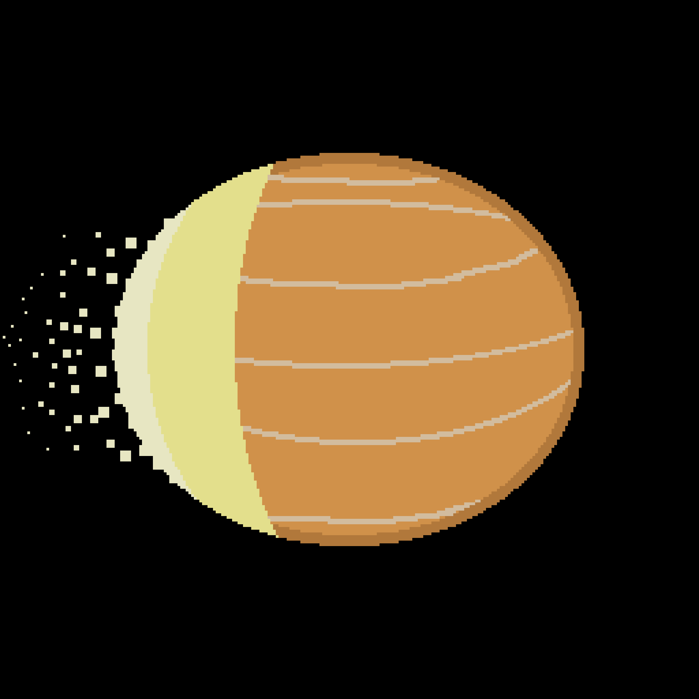

WASP-12 b är en konstig planet. Det är en gasjätte som ligger 1393 ljusår från jorden. Den upptäcktes 2007 och den har en massa som är ungefär ett och ett halv gånger så stor som Jupiter. Det som gör den konstig är att den ligger så nära sin stjärna att den blir sönderriven av den. Planeten har också blivit äggformad eftersom den är så nära.